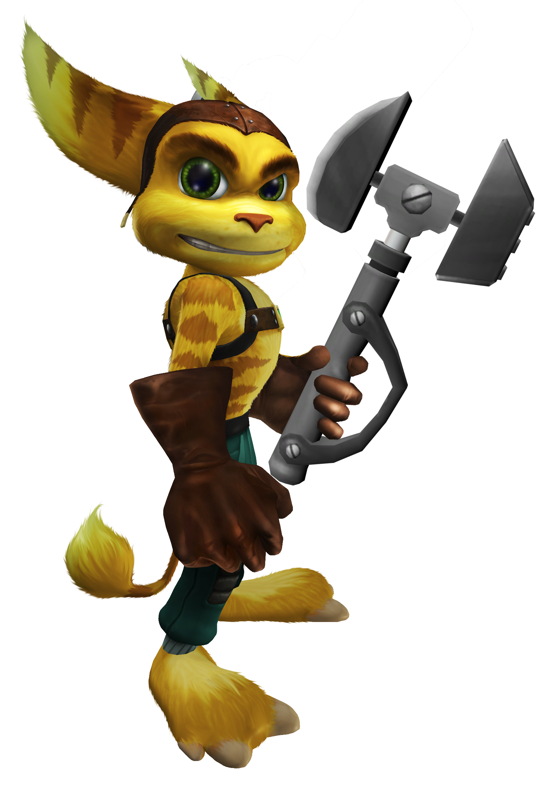
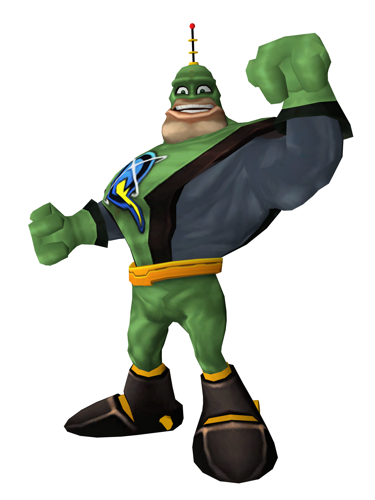

This is a page all about the first R&C game for PS2(2002).
Ratchet
Ratchet is a youg mechaic on a desert planet who yearns for adventure. Ratchet is one of the main characters of the game and is important to the story.
Clank
Clank is a defected robot that learns about Chairman Drek's evil plans, who takes a ship and tries to find someone to help him. He is shot down and crash lands on Veldin where he meets Ratchet.

Chairman Drek
Chairman Drek is an evil business man who is responsible for turning the blargian home planet inot a polluted wasteland of toxic waste.

Qwark
\Captain Qwark is a washed up hero, at one time he was a true hero, but he later got sucked into being a celebrity. He becomes one of Dreks puppets and using him to sponsor his evil plans.
